설비보전기사(구) (2020-06-06 기출문제)
1과목: 설비 진단 및 계측
1. 공장의 환기 덕트 출구가 민가 쪽을 향하고 있어 소음이 문제가 되고 있을 때 대책으로 적절하지 않은 것은?
- 덕트 출구의 방향을 바꾼다.
- 덕트 출구의 면적을 작게 한다.
- 덕트 출구에 소음기를 설치한다.
- 덕트 출구 앞에 흡음 덕트를 붙인다.
(정답률: 83%)

2. 유체의 흐름에 따라 회전하는 회전자로 케이스 사이의 공극에 유체를 연속적으로 취입해서 송출이라는 동작을 반복하여 회전자의 운동 횟수로 유량을 측정하는 유량계는?
- 면적식 유량계
- 용적식 유량계
- 전자식 유량계
- 차압식 유량계
(정답률: 78%)
3. 회전수 계측법 중 전자식 검출법에 대한 설명으로 틀린 것은?
- 전원이 필요 없다.
- 내구성이 우수하다.
- 자속 밀도의 변화를 이용한다.
- 정지에 가까운 저속검출에 적합하다.
(정답률: 69%)
4. 진동 측정 파리미터를 선정할 때 일반적으로 속도를 많이 활용하는 이유로 틀린 것은?
- 인체의 감도는 일반적으로 속도에 비례한다.
- 진동에 의한 설비의 피로는 진동속도에 반비례한다.
- 진동에 의해 발생하는 에너지는 진동 속도의 제곱에 비례한다.
- 과거의 경험적 기준 값은 대부분 속도가 일정할 때의 기준이다.
(정답률: 61%)
5. 다음 그림은 어떤 정류인가?
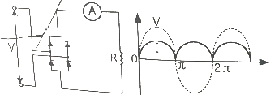
- 교류
- 직류
- 반파 정류
- 전파 정류
(정답률: 66%)
6. 진동 차단기의 요구조건으로 틀린 것은?
- 강성이 충분히 작아서 차단 능력이 있어야 한다.
- 강성은 작되 걸어준 하중을 충분히 견딜 수 있어야 한다.
- 온도, 습도, 화학적 변화 등에 의해 견딜 수 있어야 한다.
- 진동발생 기계에서 외부로 진동이 잘 전달되도록 해야 한다.
(정답률: 76%)
7. 다음 중 진동을 측정할 때 진동 센서를 부착하는 가장 적절한 위치는?
- 댐퍼
- 커플링
- 모터 축
- 베어링 하우징(케이스)
(정답률: 73%)
8. 1자유도 진동시스템에서 비감쇠일 때 고유진동주파수에 대한 설명으로 옳은 것은? (단, 스프링상수 : k[kgf/mm], 질량 : m[kg]이다.)
- 고유진동주파수는
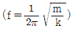
으로 나타낸다. - 고유진동주파수는 시스템의 스프링상수에 비례한다.
- 고유진동주파수와 강제진동주파수가 일치하면 시스템이 안정된다.
- 고유진동주파수는 외부로부터 주기적인 힘이 가해짐으로써 발생하는 진동 현상이다.
(정답률: 56%)
9. 가속도 센서의 부착방법 중 사용할 수 있는 주파수 영역이 넓고 정확도가 우수하나 가속도계 이동 및 고정시간이 길고 고정 시 구조물에 탭 작업을 하여 고정하는 방법은?
- 손고정
- 나사고정
- 왁스고정
- 영구자석고정
(정답률: 85%)
10. 단순 진동수의 운동이 정현적으로 발생하고 있다. 진동 속도가 v[m/s](피크 값)이고, 이 때의 진동 주파수가 f[Hz]일 때 진동 가속도[m/s2]를 구하는 식으로 옳은 것은?
- 2π×f×v
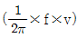
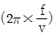
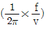
(정답률: 70%)
11. 질량 불균형(Unbalance)에 의해 발생하는 진동특성의 설명으로 틀린 것은?
- 회전수가 증가할수록 진동레벨이 높게 나타난다.
- 주기적인 충격피크를 볼수 있는 파형이 나타난다.
- 회전 주파수 1× 성분의 분명한 주파수가 나타난다.
- 질량 불균형에 의한 진동은 수평·수직 방향에 최대의 진폭이 발생한다.
(정답률: 44%)
12. 제어량과 목표값을 비교하고 그들이 일치하도록 정정 동작을 하는 제어는?
- 순차 제어
- 조건 제어
- 시퀀스 제어
- 피드백 제어
(정답률: 77%)
13. 진동의 크기를 바르게 표현한 것은?
- 편진폭(피크값) : 정측의 최댓값에서 부측의 최댓값까지의 합이다.
- 전진폭 : 정측이나 부측에서 진동량 절댓값의 최댓값이다.
- 실효값 : 진동에너지를 표현하는 것에 적합한 rms 값이다.
- 평균값 : 진동량을 평균한 값으로 정현파의 경우 피클값의 1/√2 이다.
(정답률: 67%)
14. 소음을 측정하기 위해 공장에서 준비해야 할 자료가 아닌 것은?
- 공장 배치도
- 기계 배치도
- 생산 현황도
- 작업 공정도
(정답률: 79%)
15. 다음 압력측정방법 중 탄성 방식이 아닌 것은?
- 벨로스식 압력계
- 부르동관식 압력계
- 자동 용량식 압력계
- 다이어프램식 압력계
(정답률: 56%)
16. 크고 작은 두 소리를 동시에 들을 때, 큰 소리만 듣고 작은 소리는 듣지 못하는 현상은?
- 음의 반사
- 마스킹 효과
- 중첩의 원리
- Doppler 효과
(정답률: 79%)
17. 다른 진동체상의 고정된 기준점에 대하여 어느 진동체의 상대적인 이동을 의미하며, 순간적인 위치 및 시간 지연을 무엇이라 하는가?
- 위상
- 진폭
- 주파수
- 포락선
(정답률: 66%)
18. 신호 전송의 노이즈 대책으로 접지 시 주의사항으로 적절하지 않은 것은?
- 가능한 여러 지점으로 접지할 것
- 직렬 배선을 피하고 병렬로 할 것
- 가능한 굵은 도선(도체)을 사용할 것
- 실드 피복, 패널류는 필히 접지할 것
(정답률: 64%)
19. 진동체에 물리량이 주어졌을 때 그 진동체가 갖는 특정한 값을 가진 진동수와 파장만의 진동만이 허용될 때의 진동은?
- 강제 진동
- 고유 진동
- 탄성 진동
- 흡음 진동
(정답률: 75%)
20. 소음의 가청음압과 가청주파수에 대한 설명으로 옳은 것은?
- 최저 가청주파수는 0Hz이다.
- 최대 가청주파수는 10000Hz이다.
- 최대 가청음압은 60Pa 또는 130dB이다.
- 최저 가청음압은 2×10-3Pa 또는 0dB이다.
(정답률: 59%)
2과목: 설비관리
21. 계측작업 및 방법의 관리와 합리화를 위한 방법과 가장 거리가 먼 것은?
- 안전관리의 향상
- 계측 작업의 표준화
- 계측 정밀도의 유지향상
- 계측기의 사용, 취급법의 적정화
(정답률: 76%)
22. 설비투자 및 대체의 경제성 평가를 할 때 비교하는 대안 사이에서 조업비용이나 자본비용 면에서 계산하여 판정하는 원가비교법에 해당되지 않는 것은?
- 연간비용법
- 현가비교법
- 제조원가비교법
- 자본회수 기간법
(정답률: 56%)
23. 공장 에너지 관리 중 열관리 방법에 해당되지 않는 것은?
- 소음 관리
- 연소 관리
- 연료 관리
- 열계측 관리
(정답률: 77%)
24. 가공 및 조립형 설비손실에 포함되지 않는 것은?
- 고장 손실
- 시가동 손실
- 공정불량 손실
- 속도저하 손실
(정답률: 60%)
25. 원자재의 양, 질, 비용, 납기 등의 확보가 곤란할 경우 원자재를 자사생산으로 바꾸어 기업 방위를 도모하는 투자는?
- 후생 투자
- 방위적 투자
- 합리적 투자
- 공격적 투자
(정답률: 75%)
26. 이론사이클 시간과 실제사이클 시간과의 차이에서 발생하는 로스는?
- 고장 로스
- 조정 로스
- 속도저하 로스
- 계획정지 로스
(정답률: 76%)
27. 다음 중 일시 정체 로스에 대한 대책으로 가장 거리가 먼 것은?
- 현상을 잘 파악할 것
- 최적 조건을 파악할 것
- 미세한 결함도 시정할 것
- 간단한 결함은 무시할 것
(정답률: 76%)
28. 어떤 특정 환경과 운전 조건 하에서 어느 주어진 시점 동안 명시된 특정 기능을 성공적으로 수행할 수 있는 확률을 무엇이라 하는가?
- 효용성
- 신뢰성
- 유용성
- 생산성
(정답률: 67%)
29. 다음 중 예방보전의 효과로 틀린 것은?
- 유효손실의 감소와 설비 가동률의 향상
- 설비 갱신기간의 연장에 의한 설비 투자액의 경감
- 긴급용 예비기기의 필요성 증가와 자본투자의 증가
- 고장으로 인한 생산예정의 지연으로 발생하는 납기지연의 감소
(정답률: 74%)
30. 자주보건에 관한 설명 중 틀린 것은?
- 자주보건은 운전자 스스로 전개하는 하나의 보전 활동이다.
- 작업자는 단순한 조직에만 그치는 것이 아니라 설비보전업무도 수행할 수 있도록 해야 한다.
- 자주보전 활동은 고장 및 불량을 극소화하여 보전효율 달성을 목적으로 하는 체계화된 활동이다.
- 자주보전의 핵심은 자기(운전자)가 운전설비는 운전자 스스로가 관리함으로써 현장 개선의 일익을 담당한다.
(정답률: 49%)
31. 시스템의 잠재적 결함을 조직적으로 규명하고 조사하는 설계 기법의 하나로서 설비 사용자에게도 설비의 끊임없는 평가와 개선을 실시할 수 있는 고장 유형, 영향 분석 기법은?
- PM 분석
- QM 분석
- FTA 분석
- FMECA 분석
(정답률: 60%)
32. 치공구 관리에서 보전 단계에서 해당하지 않는 것은?
- 공구의 검사
- 공구의 보관과 대출
- 공구의 제작 및 수리
- 공구 소요량의 계획 및 보충
(정답률: 50%)
33. 설비보전 요소에 해당되지 않는 것은?
- 열화방지
- 열화지연
- 열화회복
- 열화측정
(정답률: 70%)
34. 설비보전시스템에서 체계도를 구성할 때, 가장 먼저 고려할 사항은?
- 생산계획
- 보전계획
- 표준설정
- 보전예방
(정답률: 55%)
35. 수리공사를 하기 위해서는 절차, 재료, 공수 등 공사 견적을 실시하게 되는데 수리공사 견적법으로 사용되지 않는 것은?
- 경험법
- 실적 자료법
- 표준 개량법
- 표준 자료법
(정답률: 53%)
36. 품질 개선활동을 위하여 현상파악에 사용되는 수법 중 불량품, 결점, 사고 건수 등의 현상이나 원인별로 데이터를 내고 수량이 많은 순서로 나열하여 크기를 막대그래프로 나타내는 것은?
- 관리도
- 산정도
- 파레토도
- 히스토그램
(정답률: 66%)
37. 설비배치 계획이 필요한 경우가 아닌 것은?
- 신제품의 제조
- 작업장의 확장
- 새 공장의 건설
- 작업자 신규 채용
(정답률: 79%)
38. 설비배치의 분석 기법에 해당되지 않은 것은?
- MTBF분석
- 자재흐름분석
- 제품수량분석
- 흐름활동 상호관계 분석
(정답률: 61%)
39. 상비품 품목결정방식 중 상비수방식의 특성으로 틀린 것은?
- 관리수속이 간단하다.
- 재고금액이 적어진다.
- 구입단가가 경제적이다.
- 재질변경에 따른 손실이 많다.
(정답률: 51%)
40. 다음 상비품의 발주방식 중 주문량과 주문점을 균등하게 한 것으로 용량이 균등한 두 개의 같은 용량, 용기를 상호적으로 사용하여, 한쪽 용기 내의 물품을 다 소모했을 경우에 용량분의 주문을 하는 것은?
- 복책법
- 포장법
- 정기 발주방식
- 사용고 발주방식
(정답률: 52%)
3과목: 기계일반 및 기계보전
41. 구성인선(Built up edge)의 방지대책으로 틀린 것은?
- 경사각을 작게 할 것
- 절삭 깊이를 적게 할 것
- 절삭속도를 빠르게 할 것
- 절삭공구의 인선을 날카롭게 할 것
(정답률: 54%)
42. 측정공구 중 비교측정에 사용되는 측정기는?
- 측장기
- 옵티미터
- 마이크로미터
- 버니어 캘리퍼스
(정답률: 58%)
43. 나사의 표시법에서 M10-6H/6g에 대한 설명으로 맞는 것은?
- 미터 보통나사(M10) 수나사 6H와 암나사 6g의 조합
- 미터 보통나사(M10) 암나사 6H와 수나사 6g의 조합
- 미터 관용평행나사(M10) 수나사 6H와 암나사 6g의 조합
- 미터 관용평행나사(M10) 암나사 6H와 수나사 6g의 조합
(정답률: 62%)
44. 내스케일성 및 고온산화 방지를 위하여 실시하는 표면경화 열처리 방법으로 강재를 가열하여 그 표면에 알루미늄을 확산침투시키는 것은?
- 크로미아징
- 칼로라이징
- 세라다이징
- 실리콘나이징
(정답률: 62%)
45. 펌프에서 수격현상의 특징으로 틀린 것은?
- 밸브를 급격히 열거나 닫을 때 발생한다.
- 펌프의 동력이 급속히 차단될 때 나타난다.
- 관로에서 유속의 급격한 변화에 의한 압력이 상승 또는 하강하는 현상이다.
- 펌프 내부에서 흡입 양정이 높거나 흐름 속도가 국부적으로 빨라져 기포가 발생하거나 유체가 증발한다.
(정답률: 68%)
46. 압축기 베어링의 사고와 원인 중 이상음의 발생 원인이 아닌 것은?
- 오일 냉각 부족
- 기름의 노화 오염
- 윤활유 종류의 부적합
- 윤활유의 적정 유량 유지
(정답률: 72%)
47. 베어링의 열 박음에서 가열끼움을 하려고 할 때 가열방법으로 가장 거리가 먼 것은?
- 수증기로 가열
- 기름으로 가열
- 액화질소로 가열
- 가스토치로 가열
(정답률: 66%)
48. 다음 중 송풍기의 주요 구성품이 아닌 것은?
- 케이싱
- 피스톤
- 임펠러
- 축 베어링
(정답률: 75%)
49. 고무 스프링의 특징으로 옳은 것은?
- 감쇠작용이 커서 진동의 절연이나 충격 흡수에 좋다.
- 노화와 변질 방지를 위하여 기름을 발라 두어야 한다.
- 인장력에 강하지만 압축력에 약하므로 압축하중을 피하는 것이 좋다.
- 크기 및 모양을 자유로이 선택할 수는 없고 여러 가지 용도로 사용이 불가능하다.
(정답률: 66%)
50. 보스와 축의 둘레에 많은 키를 깎아 붙인 것과 같은 것으로 일반적인 키 보다 훨씬 큰 동력을 전달시킬 수있고 내구력이 커서 자동차, 공작기계 발전용 증기 터빈 등에 이용되는 체결용 기계요소는?
- 스플라인
- 테이퍼 핀
- 미끄럼 키
- 플랜지 너트
(정답률: 60%)
51. 일반전인 래핑(lapping)의 특성으로 틀린 것은?
- 가공면은 윤활성 및 내마모성이 좋다.
- 정밀도가 높은 제품을 가공할 수 있다.
- 가공이 간단하고 대량생산이 가능하다.
- 먼지의 발생이 없고 가공면에 랩제가 잔류하지 않는다.
(정답률: 62%)
52. 스프링의 도시 방법을 설명한 내용 중 틀린 것은?
- 겹판 스프링은 일반적으로 스프링 판이 수평인 상태에서 그린다.
- 조립도, 설명도 등에서 코일 스프링을 도시하는 경우에는 그 단면만을 나타내어도 좋다.
- 코일 스프링, 벌류트 스프링, 스파이럴 스프링 및 접시 스프링은 일반적으로 무하중 상태에서 그린다.
- 스프링의 종류 및 모양만을 간략도로 나타내는 경우에는 스프링 재료의 중심선만을 일점쇄선으로 그린다.
(정답률: 61%)
53. 보전용 재료 중 방청 윤활유의 종류와 기호가 잘못 연결된 것은?
- 1종(1호) : KP-7
- 1종(2호) : KP-8
- 1종(3호) : KP-9
- 1종(4호) : KP-10
(정답률: 69%)
54. 감속기의 양호한 조립상태를 유지하기 위한 조치로 적절하지 못한 것은?
- 이상의 조기발견
- 정확한 윤활의 유지
- 빈번한 분해수리 실시
- 이 면의 마모상태 파악
(정답률: 77%)
55. 일반적인 탄산가스 아크 용접의 특징으로 틀린 것은?
- 가시 아크이므로 시공이 편리하다.
- 바람의 영향을 받지 않으므로, 방풍 장치가 필요 없다.
- 전류밀도가 높아 용입이 깊고 용접 속도를 빠르게 할 수 있다.
- 용제를 사용하지 않아 슬래그의 혼입이 없고, 용접 후의 처리가 간단하다.
(정답률: 68%)
56. 다음 중 응력집중에 의한 축의 파단원인으로 가장 거리가 먼 것은?
- 키 홈의 마모
- 축의 가공 불량
- 설계 형상의 오류
- 커플링 중심내기 불량
(정답률: 62%)
57. 압축기의 배관에 대한 설명으로 옳은 것은?
- 배관 길이는 가능한 길게 한다.
- 압축기와 탱크 사이의 배관은 클수록 좋다.
- 배관도중의 하부에는 드레인 밸브를 부착한다.
- 압축기의 분해, 조립과 관계없이 배관의 지름을 크게 한다.
(정답률: 70%)
58. 토출관이 짧은 저 양정(전 양정 약 10m 이하 펌프의 토출관에 설치하는 역류방지 밸브로 가장 적당한 것은?
- 앵글 밸브
- 푸트 밸브
- 반전 밸브
- 플랩 밸브
(정답률: 71%)
59. 불량·수정로스에서 불량을 해결하기 위한 대책으로 가장 거리가 먼 것은?
- 요인계통을 재검토 할 것
- 현상의 관찰을 충분히 할 것
- 원인을 한 가지로 정하고, 그 부분만 수정할 것
- 요인 중에 숨은 결함의 체크 방법을 재검토 할 것
(정답률: 73%)
60. 전동기 내 베어링의 발열에 대한 원인이 아닌 것은?
- 윤활제의 부적합
- 베어링 조립불량
- 냉각 팬 축에 억지 끼워 맞춤
- 체인, 벨트 등의 지나친 팽팽함
(정답률: 63%)
4과목: 윤활관리
61. 그리스의 급유방법 중 자기순환급유법의 윤활장치로 적합한 장치는?
- 링 급유장치
- 밀봉 베어링
- 칼라 급유장치
- 패드 급유장치
(정답률: 57%)
62. 윤활유의 물리적, 화학적 성질에 대한 설명으로 틀린 것은?
- 유동점이란 오일이 흐를 수 있는 가장 높은 온도를 말한다.
- 점도란 액체가 유동할 때 나타나는 내부저항을 말한다.
- 전산가는 오일 중에 포함되어 있는 산성 성분의 양을 말한다.
- 점도지수란 온도의 변화에 따른 윤활유의 점도변화를 나타내는 수치이다.
(정답률: 60%)
63. 윤활관리의 주요기능이 아닌 것은?
- 마모 방지
- 마찰 손실 방지
- 방청 작용 방지
- 녹아 붙음 방지
(정답률: 60%)
64. 미끄럼 베어링의 급유법으로 가장 적합하지 않은 방식은?
- 순환식
- 분무식
- 유욕식
- 전손식
(정답률: 48%)
65. 설비의 고장원인 중 윤활로 인한 문제로 볼 수 없는 것은?
- 충분한 플러싱
- 과잉 및 과소급유
- 부적절한 오일 사용
- 이종 오일의 혼합사용
(정답률: 72%)
66. 윤활유제 급유법 대비 그리스계 급유법의 장점이 아닌 것은?
- 누설이 적다.
- 급유간격이 길다.
- 냉각작용이 우수하다.
- 밀봉성이 좋고 먼지 등의 침입이 적다.
(정답률: 69%)
67. 윤활성은 다소 떨어지지만 불연성이란 이점으로 제철소 등의 고온개소 유압작동유로 사용되는 것은?
- EP 작동유
- 고온용 작동유
- 고점도지수 작동유
- 수-글리콜계 작동유
(정답률: 53%)
68. 윤활유의 첨가제가 가져야 할 성질 중 틀린 것은?
- 증발이 많아야 한다.
- 기유에 용해도가 좋아야 한다.
- 저장 중에 안정성이 좋아야 한다.
- 다른 첨가제와 잘 조화되어야 한다.
(정답률: 75%)
69. 윤활유가 유화되는 원인으로 가장 거리가 먼 것은?
- 수분과의 접촉이 적었을 때
- 기름의 산화가 상당히 일어났을 때
- 운전 조건이 가혹해서 탄화수소분의 변질을 가져왔을 때
- 윤활유가 열화하여 이물질분이 증가되어 고점도유에 이르렀을 때
(정답률: 69%)
70. 윤활관리의 효과로 가장 거리가 먼 것은?
- 윤활 사고의 방지
- 제품의 정도 향상
- 기계 정도와 기능의 유지
- 완전 운전에 의한 유지비의 증가
(정답률: 74%)
71. 윤활유 분석을 위한 시료 채취 시 주의 사항으로 틀린 것은?
- 탱크 바닥에서 채취한다.
- 시료는 가동중인 설비에서 채취한다.
- 채취 개소는 일정한 장소나 지점에서 채취한다.
- 샘플링 Line이나 밸브, 채취 기구는 샘플링 전에 충분히 Flushing을 한다.
(정답률: 66%)
72. 플러싱유 선택시 고려해야 할 사항으로 틀린 것은?
- 방청성이 우수 할 것
- 고온의 청정 분산성을 가질 것
- 고점도유로서 인화점이 낮을 것
- 사용유와 동질의 오일을 사용할 것
(정답률: 69%)
73. 미끄럼 베어링에서 윤활에 필요한 점성유막을 만들기 위한 조건으로 틀린 것은?
- 윤활제가 적당한 점도를 가져야 한다.
- 이 면간의 유막이 쐐기형으로 되어 있어야 한다.
- 고정면과 운동면 사이에 상대적인 미끄럼이 존재하여야 한다.
- 전동체와 리테이너 사이의 미끄러지는 부분에 윤활이 되어야 한다.
(정답률: 45%)
74. 왕복동 공기 압축기에서 내부 윤활유의 원인으로 발생되는 고장이 아닌 것은?
- 크랭크 샤프트의 마모
- 탄소의 부착, 발화, 폭발
- 드레인 트랩의 작동 불량
- 실린더나 피스톤링의 마모
(정답률: 44%)
75. 설비의 우발 고장기간 중 고장감소를 위한 보전방법으로 옳지 않은 것은?
- 오염 관리
- 윤활제 관리
- 운전보전 관리
- 윤활설비 사후보전
(정답률: 67%)
76. 다음 중 윤활제의 중화가를 측정하는 방법으로 옳은 것은?
- 콘라드손법
- 램스보텀법
- 형광분석법
- 전위차 측정법
(정답률: 53%)
77. 기계설비의 운전 시 사고발생의 원인으로 윤활부위, 윤활조건, 윤활환경 등에 따라 분류할 수 있다. 이 중 윤활 환경적 요인으로 가장 거리가 먼 것은?
- 전도열이 높은 경우
- 오일의 열화와 오탁
- 기온에 의한 현저한 온도변화
- 마찰면의 방열이 불충분한 경우
(정답률: 53%)
78. 일반적인 기어 윤활에 관한 설명으로 틀린 것은?
- 고속기어에는 저점도의 윤활유가 적합하다.
- 하이포이드 기어는 일반적으로 중하중을 받으므로 불활성 극압 윤활유가 적당하다.
- 웜 기어는 미끄럼 속도가 빠르고 운전온도도 높게 되므로 산화 안정성이 우수한 순광유가 일반적으로 사용된다.
- 기어는 높은 하중을 받아 미끄러질 때 마찰면 마모를 방지하기 위하여 내하중성이 있는 극압유가 요구된다.
(정답률: 48%)
79. 그리스 시험 중 중화주도의 표준시험온도와 표준혼화회수로 가장 적합한 것은?
- 20±0.5℃, 80회
- 25±0.5℃, 40회
- 25±0.5℃, 60회
- 20±0.5℃, 100회
(정답률: 56%)
80. 절삭유에 요구되는 주요성능으로 틀린 것은?
- 세정성
- 가열성
- 방청성
- 반용착성
(정답률: 67%)
5과목: 공유압 및 자동화
81. 핸들링에 대한 설명으로 틀린 것은?
- 핸들링 기능은 가공작업이다.
- 핸들링은 수동이나 기계에 의해 이루어진다.
- 핸들링은 생산 공정에서 작업물의 광범위한 조정 역할이다.
- 핸들링은 일반적으로 작업물, 공구, 부품의 조정과 이송이다.
(정답률: 59%)
82. 공장자동화 장치에 사용되는 공유압 실린더의 역할로만 짝지어진 것은?
- 잡기(clamp), 이송, 회전
- 홈 파기, 구멍 뚫기, 나사내기
- 설계, 정보이송, 데이터 가공
- 도장하기, 조립하기, 도면그리기
(정답률: 70%)
83. 전기회로에서 수동 소자가 아닌 것은?
- 저항
- 인던터
- 커패시터
- OP-AMP
(정답률: 57%)
84. 전기 기계에서 히스테리시스손을 감소시키기 위하여 사용하는 강판은?
- 청동 판
- 황동 판
- 규소 강판
- 스페인리스강판
(정답률: 60%)
85. 다음 밸브의 간략기호는?
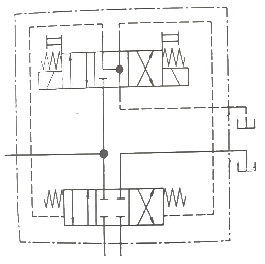
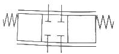
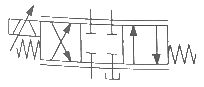
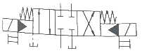
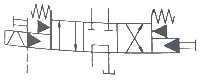
(정답률: 60%)
86. 유압 텔레스코프형 다단실린더에 대한 설명으로 틀린 것은?
- 긴 행정거리가 요구되는 경우에 사용한다.
- 정확한 위치제어를 행하는 경우에 사용한다.
- 유압유가 유입되면 순차적으로 실린더가 동작한다.
- 유압 실린더 내부에 다시 별개의 실린더를 내장한 구조이다.
(정답률: 51%)
87. 다음 설명에 해당되는 법칙은?
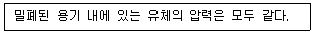
- 연속의 법칙
- 베르누이 법칙
- 파스칼의 법칙
- 벤투리관의 법칙
(정답률: 57%)
88. 다음 그림과 같이 회전자가 연속적으로 접촉하여 회전하며 1회전 당 토출량은 많으나 토출량의 변동이 큰 특징을 가진 펌프는?
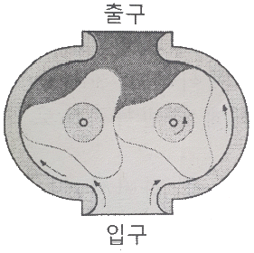
- 로브 펌프
- 스크루 펌프
- 내접 기어 펌프
- 트로코이드 펌프
(정답률: 64%)
89. 자동화시스템의 고장 추적을 위해 각 구동 요소의 스텝에 따른 작동 순서를 파악할 수 있는 선도는?
- 블록 선도
- 제어 선도
- 변위-단계 선도
- 변위-시간 선도
(정답률: 60%)
90. 직동형 압력 릴리프 밸브의 특징으로 옳은 것은?
- 구조가 복잡하다.
- 압력 조정 범위가 넓다.
- 채터링을 일으키기 쉽다.
- 주로 고압용으로 사용한다.
(정답률: 46%)
91. 실제의 시간과 관계된 신호에 의하여 제어가 이루어지는 것은?
- 논리제어계
- 동기제어계
- 메모리제어계
- 파일럿제어계
(정답률: 61%)
92. 실린더의 이론 출력을 구하기 위해 필요한 요소가 아닌 것은?(문제 오류로 가답안 발표시 3번으로 발표되었지만 최종정답 발표시 3, 4번이 정답 처리 되었습니다. 여기서는 가답안인 3번을 누르면 정답 처리 됩니다.)
- 공기 압력
- 실린더 튜브 내경
- 실린더 행정 거리
- 피스톤 로드 내경
(정답률: 71%)
93. 압력을 측정하는데 있어서 완전 진공상태를 0으로 기준삼아 측정하는 압력은?
- 대기 압력
- 절대 압력
- 표준 압력
- 게이지 압력
(정답률: 64%)
94. 자동제어에 해당하는 작업은?
- 실린더 전·후진 위치에 리밋 스위치를 설치하여 반복 작업을 한다.
- 아크 용접 로봇이 서보 모터를 이용하여 입력된 경로대로 용접 작업을 수행한다.
- 요동형 액추에이터에 센서를 설치하여 제한된 각도에서 반복적으로 회전운동을 한다.
- 캠이 회전운동을 하면서 리밋 스위치를 작동시키면 그 신호를 받아 실린더가 동작한다.
(정답률: 66%)
95. 공기압 요소의 표시방법 중 숫자를 이용한 방법에서 ‘2.4’라는 숫자의 의미로 옳은 것은? (단, 제어 대상은 실린더이다.)
- 2번 실린더의 전진 단에 설치된 요소
- 2번 실린더의 후진 단에 설치된 요소
- 2번 실린더의 전진 운동에 관계되는 요소
- 2번 실린더의 후진 운동에 관계되는 요소
(정답률: 61%)
96. 윤활기에 대한 설명으로 옳은 것은?
- 윤활기는 파스칼의 원리를 적용한 것이다.
- 과도하게 윤활의 양이 많아도 부품들의 동작에 영향이 없다.
- 공압 기기에 충분한 윤활제를 공급하는 것이다.
- 윤활된 공기는 실린더의 운동에 소모되어 환경오염에 영향이 없다.
(정답률: 57%)
97. 단위 질량당 유제의 체적을 무엇이라 하는가?
- 밀도
- 비중
- 비중량
- 비체적
(정답률: 62%)
98. 불량 로스에 해당하는 것은?
- 고장 정지 로스
- 속도 저하 로스
- 작업 준비·조정 로스
- 초기유동관리 수율 로스
(정답률: 40%)
99. 축압기(accumulator)의 기능이 아닌 것은?
- 맥동압의 제거
- 서지압의 흡수
- 회로압의 증대
- 압력에너지 저장
(정답률: 54%)
100. 압축 공기가 2개의 입구에 모두 작용할 때만 출구에 압축 공기가 나오는 동작을 하는 밸브는?
- 2압 밸브
- OR 밸브
- 감압 밸브
- 분류 밸브
(정답률: 68%)